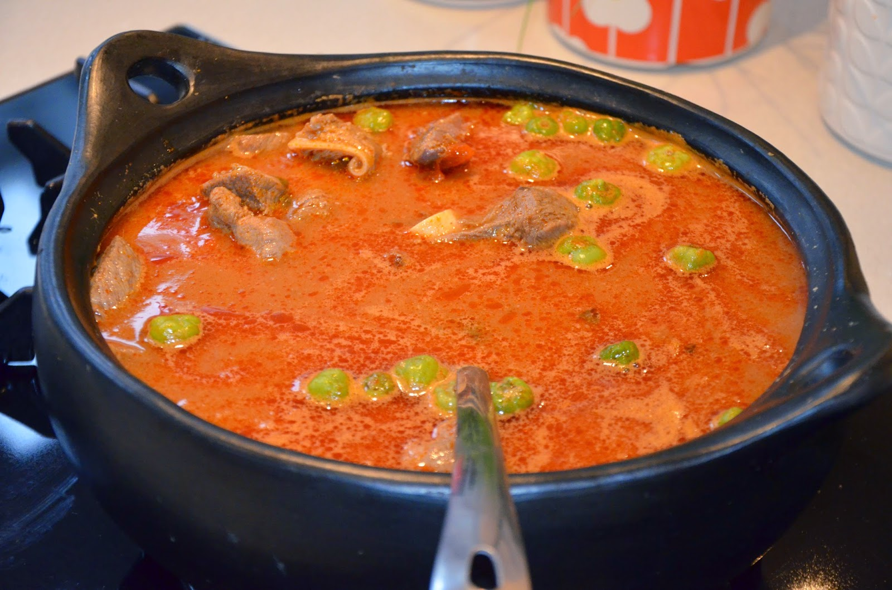

Light Soup

Description
This is a recipe on how to make light soup
Ingredients
- 4 pieces tomato
- tomato paste
- pepper powder
- pepper
- spices (garlic, ginger, seasoning)
- okra
- garden eggs
- dry fish
- cow meat
- chicken
- salt
Steps
- Wash and clean your fish and meat thoroughly in a bowl of water. Remove bones if any
- Wash pepper garlic, onion and ginger and blend together.
- Season with garlic, ginger, pepper and onion mixture. Add a moderate amount of salt to taste.
- Marinate for about 30 minutes.
- Steam under medium heat for about 8 minutes. Take out the fish from the stock to prevent it from dissolving.
- Peel and wash onions, tomatoes and peppers. Add to the stock and add fill 2/3 of the cooking pot or saucepan with water.
- Boil under medium heat until the vegetables (onion, pepper and tomatoes) are soft.
- Remove the vegetables, blend until smooth and pout it back into the saucepan.
- Add a desirable amount of water.
- Add the fish and little amount of salt to taste. Simmer over medium heat for about 10 minutes.
- Your light soup is ready
All credit goes to this recipe.